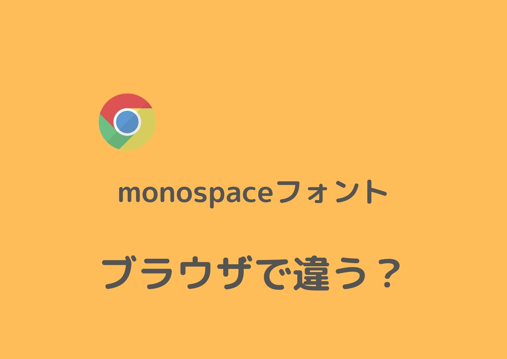

デフォルトフォントはブラウザ依存
ChromeやSafari等のブラウザは，それぞれデフォルトのフォント設定があります． デフォルトのフォントにはいくつか種類があります．
- sans-serif
- serif
- monospace
- cursive
- fantasy
「sans-serifであればゴシック体」「serifであれば明朝体」など，ブラウザによらず，ある程度同じフォントが使用されます． しかし，monospaceはブラウザによって結構違うよ，という話です．
比べてみる
Google Chrome：
Safari：
比べてみると，monospaceの（英文）フォントだけ，ブラウザによってかなり違うことがわかります．
ソース：
<div style="font-size:48px">
<div style="font-family:sans-serif">
nyakapokoのブログ (sans-serif)
</div>
<div style="font-family:serif">
nyakapokoのブログ (serif)
</div>
<div style="font-family:monospace">
nyakapokoのブログ (monospace)
</div>
<div style="font-family:cursive">
nyakapokoのブログ (cursive)
</div>
<div style="font-family:fantasy">
nyakapokoのブログ (fantasy)
</div>
</div>
実際には，ブラウザによって，具体的なデフォルトフォントは以下の違いがあるようです．
| フォント | Chrome | Safari |
|---|---|---|
| sans-serif | ヒラギノ角ゴシック Pro | Helvetica |
| serif | ヒラギノ明朝 Pro | Times |
| monospace | Osaka-等幅 | Courier |
| cursive | Apple Chancery /ヒラギノ明朝 ProN(斜体) |
Apple Chancery |
| fantasy | Papyrus /ヒラギノ角ゴシック ProN |
Papyrus |
Osaka-等幅と，Courierが違うということでしょう．
この記事を書いた理由
このブログのロゴには，デフォルトではmonospaceが使用されています． Safariだとかっこいいのに，Chromeだとダサかったので，修正する必要がありました．
Chrome:
Safari:
ちなみに，このテーマ(erblog)の紹介ページのキャプション画像を見ると，Safariで使用される前提であることがわかります． ということで，フォント名をしている箇所を修正することで，無事両方ともCourierで表示されるようになりました．
修正前：
font-family: monospace, ...;
修正後：
font-family: Courier, ...;
まとめ
- monospaceフォントはブラウザ依存が強い
- monospaceを指定するより，Courier，Osaka-等幅等を直接指定した方がいい